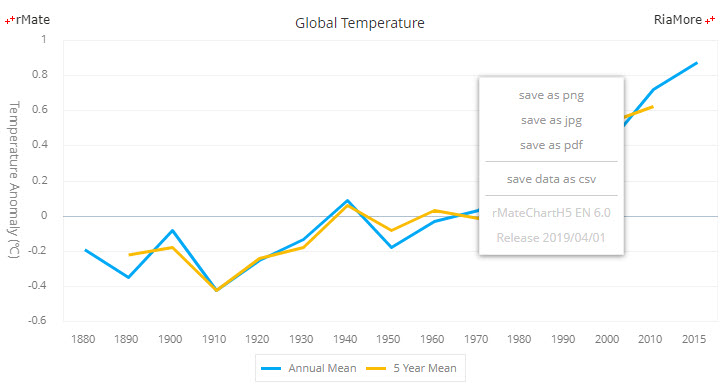

|
알메이트-차트 6.0 사용 설명서
|
컨텍스트 메뉴 기능은 이전 버전에서 제공되던 사용자 정의 메뉴와 동일한 기능입니다. 이전 버전에서는 사용자 메뉴 항목을 자바스크립트로 작성해야 했지만, 버전 6.0에서는 사용자가 마우스 오른쪽 버튼을 차트에 클릭하기만 하면 메뉴가 자동으로 표시됩니다. 다음은 마우스 오른쪽 버튼을 차트에 클릭하여 컨텍스트 메뉴를 표시한 화면입니다.
컨텍스트 메뉴 기능을 사용하지 않기 위해서는 rMateChartH5.create 함수의 세번째 인자(chartVars)의 useContextMenu 값을